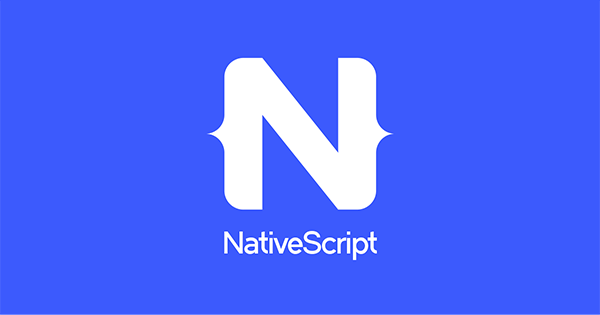

NativeScript
Какво е NativeScript и за какво се използва? [1]
NativeScript е фреймуърк с отворен код за разработка на мобилни приложения за Apple iOS и Android. Проложенията за NativeScript се създават чрез JavaScript или друг език, който се компилира до него (например TypeScript), като се поддържа интеграция с фреймуърци за уеб разработка като Angular и Vue. Целта на NativeScript е разработените чрез него мобилни приложения да бъдат напълно “native”, т.е. да имат възможност да използват същите API’s като тези, създадени чрез Xcode (за Apple iOS) или Android Studio (за Android). Освен това разработчиците могат да използват и библиотеки на трети страни от CocoaPods, Android Arsenаl, Maven, и npm.js в мобилните си приложения, без да се налага да използват “wrapper” софтуер. Чрез NativeScript CLI програмистът добива платвормена независимост на своите приложения по достъпен начин.
Начин на работа на NativeScript [2]
Технологията NativeScript може да бъде представена схематично като комбинация от няколко основни части - Runtimes, Core Modules, CLI, Plugins, представени чрез следната диаграма:

Фигура 1. Схема на работа на NativeScript приложението
Runtimes [3]
NativeScript Runtimes дават възможност на програмиста да достъпва API’s на Android и iOS, използвайки JavaScript. За тази цел те използват JavaScript виртуални машини - Google’s V8 за Android и WebKit’s JavaScriptCore имплементация, разпределена с iOS 7.0+.
NativeScript е фреймуърк, който позволява на разработчиците да пишат мобилни приложения за Android и iOS, използвайки JavaScript and CSS. Всяка мобилна платформа притежава своя екосистема и използва различни приспособления и езици за разработка - Java/Kotlin за Android и Objective C/Swift за iOS. За да се транслира JavaScript код до отговарящите платформени APIs, фреймуъркът се нуждае от специален механизъм. Именно за това са отговорни "Runtime" частите на NativeScript. Например Android Runtime може да се възприема като своеобразен мост между „световете“ на JavaScript и Android. Взаимодействието между NativeScript и Android е представено схематично в следното изображение:
Фигура 2. Схема на работа на Runtimes
V8 JavaScript виртуалната машина на Google e отговорна за обработката на скриптовия код. Начиниът на работа е аналогиче с този, по който например Node.js обработва JavaScript и го транслира до основните API’s на системата. И тук динамично се оправлява поведението на обектите и се извиква Android API функционалността, когато е необходимо. Виртуалната машина се зарежда в процеса на приложението и оперира на основната нишка от потребителския интерфейс.
Основни модули [4]
Целта на основните модули (core modules) е да предостави необходимите абстракции за достъп до основните естествени платформ. Например модула Gestures дефинира общ JS API, който превежда TypeScript/JavaScript кода на приложението в естествените API’s на Gestures (благодарение на Runtimes). Друго нещо, което предлагат основните модули, е основен XML-базиран начин за дефиниране на потребителски интерфейс, свързване на данни и навигация, чрез което Angular и Vue.js могат да се използват като технологии за разработка на приложенията.
Фигура 3. Схема на работа на Основните модули
NativeScript CLI
Командният интерфейс позволява да създаването, изграждането и стартирането на приложения с помощта на NativeScript. Интерфейсът работи на повечето популярни ОС като Windows, macOS и Linux.
NativeScript Plugins
Плъгините в NativeScript са изграждащи блокове, които капсулират някаква функционалност и помагат на разработчиците да изграждат приложения по-бързо (Основните модули например също са плъгин). Повечето са изградени TypeScript/JavaScript, но някои могат да включват естествени библиотеки, които се извикват от TS/JS кода благодарение на Runtimes.
Плъгините се инсталират чрез командата: tns plugin add
Примери за инсталиране на плъгин: tns plugin add nativescript-camera – инсталиране на плъгана за камера на NativeScript.
Пример за импортиране и използване на плъгина:
import * as camera from "nativescript-camera";
camera.requestPermissions();
Koд 1. Пример за импорт на плъгин
Пример за премахване на плъгин: tns plugin remove nativescript-camera
Архитектура на NativeScript приложението [5]
Приложенията на NativeScript притежават определена архитектура, когато са написан чрез основния фреймуърк (Core Framework).
Начална точка
Началната точка за основното NativeScript приложение се декларира във файла package.json в root директория на приложението. Декларира се обикновено като app.js или app.ts в случай, че сте създали проект чрез TypeScript. Файлът може да се използва за извършване на инициализации на ниво приложение, но основната му цел е да предаде контрол на основния модул на приложението. За целта трябва да бъде извикан метода application.run (), в който да се окаже пътя към основния модул.
// app.js
const application = require("tns-core-modules/application");
application.run({ moduleName: "app-root" });
Koд 2. Пример за стартиране на приложение
Модули на приложението (Application Modules)
NativeScript приложението бива разделено на модули. Даден модул включва поне .xml файл, съдържащ имплементацията на потребителския интерфейс. Освен това модулът може да съдържа и .js файл за добавяне на логика към модула, както и .css файл, чрез който се добавят стилове към потребителския интерфейс. Важно за тези допълнителни файлове е да бъдат със същото име като .xml файла.
Например, следните файлове правят модул:
<!-- home-page.xml -->
<Page class="page" loaded="onPageLoaded">
<StackLayout>
<Label text="Hooray! Home Page loaded!"/>
</StackLayout>
</Page>
// home-page.js
function onPageLoaded(args) {
console.log("Page Loaded");
}
exports.onPageLoaded = onPageLoaded;
/* home-page.css */
.page {
background-color: teal;
}
Koд 3. Пример за модул
Основни модули (Root Modules)
Тези модули се използват като основа на контейнерите за потребителски интерфейс. Понастоящем в NativeScript има само два типа потребителски интерфейси:
-
Контейнерът на приложението - той е само един. Основният му модул се задава, като бъде подаден на метода application.run ().
-
Контейнери за моделен изглед – могат да бъдат неограничен брой и се задават чрез метода showModal () на всеки UI компонент.
Глобални стилове на приложението
NativeScript Core фреймуъркът предоставя и начин за задаване на стилизиране на приложения. Това място по подразбиране е във файла app.css в основната папка на приложението. Всички css правила, декларирани в този файл, се прилагат към всички модули на приложението. Името на файла може да се променя. Това трябва да се направи преди да бъде извикан метода application.run ():
var application = require("tns-core-modules/application");
application.setCssFileName("style.css");
application.run({ moduleName: "main-page" });
Koд 4. Пример за добавяне на стилове
Свързване на данни (Data Binding)
Свързването на данни е процесът на свързване на потребителския интерфейс на приложението (UI) с обект на JavaScript кода. В NativeScript всеки UI компонент може да бъде свързан към свързващ източник. Можете да зададете източник на свързване към всеки компонент на потребителския интерфейс чрез пропъртито bindingContext.
<!-- home-page.xml-->
<Page class="page" loaded="onPageLoaded">
<StackLayout>
<Label text=""/>
</StackLayout>
</Page>
// home-page.js
const fromObject=require("tns-core-modules/data/observable").fromObject;
function onPageLoaded(args) {
const page = args.object;
const source = fromObject({ text: "Hooray! Home Page loaded!" });
page.bindingContext = source;
}
exports.onPageLoaded = onPageLoaded;
Koд 5. Пример за data binding
Интеграция с Angular [6]

Използването на NativeScript в комбинация с Angular е лесно и бързо осъществимо. От терминала или командния трябва да се стартира нов проект с тази команда: tns създават my-angular-app –ng
Това ще създаде нов проект NativeScript с всички необходими Angular файлове, папки и настройки, готови за стартиране. По подразбиране Angular проектите използват TypeScript и NativeScript няма проблем всичките му настройки и конфигурацията му.
Angular предоставя всичко необходимо за създаване на висококачествени NativeScript приложения, лесни за поддръжка. Преизползват се Angular концепции като свързване на данни, инжектиране на зависимости, услуги и маршрутизация за изграждането на естествени мобилни приложения.
По сходен начин се осъществява и интеграцияра на NativeScript с Vue.js – друг уеб фреймуърк, който чрез NativeScript може да бъде използван за качественото създаване на естествени мобилни приложения за Android и iOS.

Жизнен цикъл на NativeScript приложението в интеграция с Angular [7]
Основните градивни елементи на NativeScript приложенията с Angular са модулите и компонентите.
Модули
Приложенията на Angular са модулни. Модулът е файл, съдържащ блок от код, посветен на една единствена цел. Експортира стойност, която може да се използва от други части на приложението. Например: export class AppComponent {}
Декларацията export е важна, тъй като прави AppComponent достъпен за други модули. Клаузата import се използва за препратка към класа на AppComponent от други модули:
import { Component } from '@angular/core';
import { AppComponent } from './app.component';
Koд 6. Пример за инпорт на компоненти в Angular
Някои от модулите могат да зависят от един или повече отделни модула. Модулите, инсталирани като npm пакети (като @angular/core в горния пример), трябва да се посочват без префикс на пътя. Когато се импортира от един от файловете на проекта, се префиксира името на модула с пътя към файла. В този пример е посочена относителния път към файла (./). Това означава, че изходният модул е в същата папка (./) като модула, който го импортира.
Компоненти
Компонентите са основните градивни елементи на NativeScript приложенията, изградени с Angular. Всяко приложение на NativeScript съдържа набор от компоненти, които определят всеки UI елемент, екран или маршрут. Приложението има един root компонент, който съдържа всички други компоненти. Пимер за прост компонент:
import { Component } from "@angular/core";
@Component({
selector: "main-component",
template: `
<StackLayout>
<Label text="Hello "></Label>
</StackLayout>
`
})
export class MainComponent {
name: string;
constructor() {
this.name = "Angular!";
}
}
Koд 7. Пример за компонент в Angular
Метаданни на компонентите
Декораторът @Component съдържа метаданни, описващи как се аде и представи компонента. Някои от опциите за конфигурация:
selector - CSS селектор, който казва на Angular да създаде и вмъкне екземпляр от този компонент, където намери селектора в шаблона на родителския компонент. Например: <main-component<>/main-component>
template - фактическият изглед на потребителския интерфейс на компонента. Тук можат да бъдат използвани всички NativeScript UI елементи и потребителски дефинирани компоненти на потребителския интерфейс.
templateUrl - Адресът на файл, където се намира шаблонът на компонента.
styles - CSS директиви, които определят стила на компонента.
styleUrls - Масив, съдържащ URL адреси на CSS файлове, които определят стила на компонента.
providers - масив от providers (помощни файлове) за инжектиране на услуги, които компонентът изисква.
Жизнен цикъл на компонентите
Жизненият цикъл на компонентите се контролира от Angular приложението. То създава, актуализира и унищожава компоненти. Има специални методи, които се използват за обработка на различни събития от жизнения цикъл на компонентите. Всеки такъв метод започва с префикса ng.
ngOnInit - Извиква се след инициализиране на всички данни от методите за въвеждане.
ngOnChanges - Извиква се след промяна на свойство.
ngDoCheck - Открива и действа при промени, които Angular не може или няма да открие самостоятелно. Извиква се при всяко изпълнение на откриване на промяна.
ngOnDestroy – Извиква се непосредствено преди Angular да унищожи компонента.
Стартиране на приложението
Началната точка на Angular приложението в NativeScript е методът platformNativeScriptDynamic().bootstrapModule(). Той приема root модула като аргумент:
import { platformNativeScriptDynamic } from "nativescript-angular/platform";
import { AppModule } from "./app.module";
platformNativeScriptDynamic().bootstrapModule(AppModule).then(() => {
console.log("The application is now running!");
}).catch((e) => {
console.log("The application bootstrapping failed with error: " + e);
});
Koд 8. Начална точка на приложение
Събития в NativeScript приложението
NativeScript позволява обработката на следните събития, настъпващи по време на работа на приложението:
launch: При стартиране на приложението.
suspend: При спиране на приложението.
resume: Когато приложението поднови работа, след като е било спряно.
displayed: Когато UI елементи се изобразяват.
exit: Когато приложението е прекратено.
lowMemory: Когато паметта на целевото устройство е недостатъчна.
uncaughtError: Когато е налице неприхваната грешка в приложението.
Примери:
import { platformNativeScriptDynamic } from "nativescript-angular/platform";
import { AppModule } from "./app.module";
import { on as applicationOn, launchEvent, suspendEvent, resumeEvent, exitEvent, lowMemoryEvent,
uncaughtErrorEvent, ApplicationEventData } from "tns-core-modules/application";
applicationOn(launchEvent, (args: ApplicationEventData) => {
if (args.android) {
// For Android applications, args.android is an android.content.Intent class.
console.log("Launched Android application with the following intent: " + args.android + ".");
} else if (args.ios !== undefined) {
// For iOS applications, args.ios is NSDictionary (launchOptions).
console.log("Launched iOS application with options: " + args.ios);
}
});
applicationOn(suspendEvent, (args: ApplicationEventData) => {
if (args.android) {
// For Android applications, args.android is an android activity class.
console.log("Activity: " + args.android);
} else if (args.ios) {
// For iOS applications, args.ios is UIApplication.
console.log("UIApplication: " + args.ios);
}
});
applicationOn(resumeEvent, (args: ApplicationEventData) => {
if (args.android) {
// For Android applications, args.android is an android activity class.
console.log("Activity: " + args.android);
} else if (args.ios) {
// For iOS applications, args.ios is UIApplication.
console.log("UIApplication: " + args.ios);
}
});
applicationOn(exitEvent, (args: ApplicationEventData) => {
if (args.android) {
// For Android applications, args.android is an android activity class.
console.log("Activity: " + args.android);
if (args.android.isFinishing()) {
console.log("Activity: " + args.android + " is exiting");
} else {
console.log("Activity: " + args.android + " is restarting");
} else if (args.ios) {
// For iOS applications, args.ios is UIApplication.
console.log("UIApplication: " + args.ios);
}
});
applicationOn(lowMemoryEvent, (args: ApplicationEventData) => {
if (args.android) {
// For Android applications, args.android is an android activity class.
console.log("Activity: " + args.android);
} else if (args.ios) {
// For iOS applications, args.ios is UIApplication.
console.log("UIApplication: " + args.ios);
}
});
applicationOn(uncaughtErrorEvent, (args: ApplicationEventData) => {
if (args.android) {
// For Android applications, args.android is an NativeScriptError.
console.log("NativeScriptError: " + args.android);
} else if (args.ios) {
// For iOS applications, args.ios is NativeScriptError.
console.log("NativeScriptError: " + args.ios);
}
});
platformNativeScriptDynamic().bootstrapModule(AppModule);
Koд 9. Примери за обработка на събития
Заключение
NativeScript е иновативен и изключително полезен фреймурък за изграждане на естествени мобилни приложения за Android и iOS. Чрез интеграцията си с уеб фраймуърци като Angular и Vue.js, той позволява на разработчиците на уеб сайтове да използват уменията си за бързо създаване и на приложения за мобилни устройства.
Източници
[1] What is NativeScript?, [https://www.nativescript.org/faq/what-is-nativescript], последно посетен на 2020-04-08 ↩
[2] Core concepts, Technical overview, [https://docs.nativescript.org/core-concepts/technical-overview], последно посетен на 2020-04-08 ↩
[3] Android runtime, [https://docs.nativescript.org/core-concepts/android-runtime/overview], последно посетен на 2020-04-08 ↩
[4] Using modules in NativeScript, [https://docs.nativescript.org/angular/core-concepts/modules], последно посетен на 2020-04-08 ↩
[5] Application architecture, [https://docs.nativescript.org/core-concepts/application-architecture], последно посетен на 2020-04-08 ↩
[6] Angular for NativeScript, [https://www.nativescript.org/nativescript-is-how-you-build-native-mobile-apps-with-angular], последно посетен на 2020-04-08 ↩
[7] NativeScript application architecture and lifecycle, [https://docs.nativescript.org/angular/core-concepts/application-lifecycle], последно посетен на 2020-04-08 ↩
Примерен код
-
Код 1. Пример за импорт на плъгин
-
Код 2. Пример за стартиране на приложение
-
Код 3. Пример за модул
-
Код 4. Пример за добавяне на стилове
-
Код 5. Пример за data binding
-
Код 6. Пример за инпорт на компоненти в Angular
-
Код 7. Пример за компонент в Angular
-
Код 8. Начална точка на приложение
-
Код 9. Примери за обработка на събития